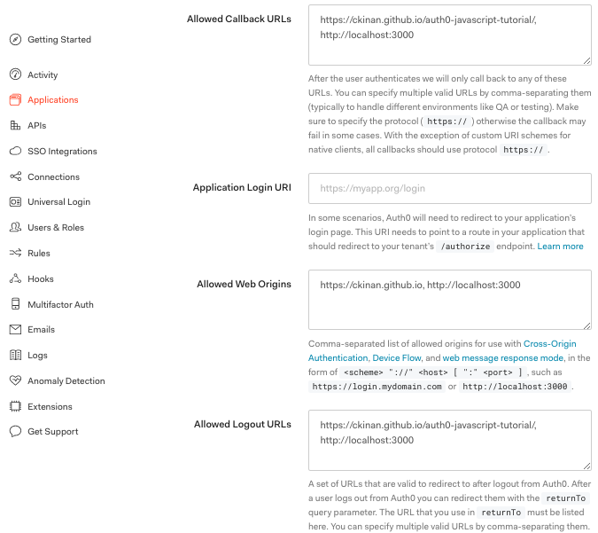

First steps with Auth0 following their tutorial to create a simple login page with Vanilla JS.
Intro
Auth0 is a complete platfom that helps you to handle authentication and authorization services in your application. It provides SDKs to connect to their solution for many technologies such as Angular, Javascript, React Vue for SPA applications, not to mention Node, PHP, Python, Java (and others) for backend and others for mobile apps.
This post is intended to get started with Auth0 by following the steps of the tutorial they have in their website using Vanilla JS (which is great and very detailed). However, after I completed all the steps, I decided to remove some parts of the code from the code, because all I wanted to have there was the most minimal version of this login page just to avoid being distracted by other things that are not directly related to the Auth0 SDK. During my research, I found this post which inspired me to do this work: https://protoout.studio/posts/auth0-github-pages/ . So, thanks Protoout for this :)
Quoting the goal of this tutorial:
This tutorial demonstrates how to add user login to a Javascript application using Auth0.
You can find the tutorial here: https://auth0.com/docs/quickstart/spa/vanillajs
After executing all the steps in there I got this configuration in my first application I called auth0-javascript-tutorial.
Steps
Auth0 Settings
Domain and Client ID, you will need them later in your JS app.

Configure the following:
- Allowed Callback URLs
- Allowed Web Origins
- Allowed Logout URLs
One Auth0-Application supports many Allowed Callback URLs, Web Origins and Logout URLs, so I have set only one application to accomplish multiple environments (local and github.io in my case).

index.html
Simple html file to show login/logout buttons and the gated-content section where the logged user profile information should be displayed. No need to change anything here, keep it as the tutorial suggests it to be.
You can load the
auth0-spa-jsfrom CDN.
<!DOCTYPE html>
<html>
<head>
<meta charset="UTF-8" />
<title>SPA SDK Sample</title>
<style>
.hidden {
display: none;
}
label {
margin-bottom: 10px;
display: block;
}
</style>
</head>
<body>
<h2>SPA Authentication Sample</h2>
<p>Welcome to our page!</p>
<button id="btn-login" disabled="true" onclick="login()">Log in</button>
<button id="btn-logout" disabled="true" onclick="logout()">Log out</button>
<div class="hidden" id="gated-content">
<p>
You're seeing this content because you're currently
<strong>logged in</strong>.
</p>
<label>
Access token:
<pre id="ipt-access-token"></pre>
</label>
<label>
User profile:
<pre id="ipt-user-profile"></pre>
</label>
</div>
<script src="https://cdn.auth0.com/js/auth0-spa-js/1.2/auth0-spa-js.production.js"></script>
<script src="app.js"></script>
</body>
</html>
app.js
This is how my minimal version of the app.js looks like:
- I am not serving the Domain and Client ID from any backend service (as the tutorial does serving them using Express).
- Just including them in the client as I don't care about them being exposed publicly for now.
- Then I organized the
onload()function just in three steps: Configure the Client, Process the Login State and Update the UI. - I made sure I didn't miss any Auth0 function from the SDK that was originally used in the tutorial, so that I can check them out later.
let auth0 = null
window.onload = async () => {
await configureClient()
await processLoginState()
updateUI()
}
const configureClient = async () => {
auth0 = await createAuth0Client({
domain: "dev-scp6vo-0.auth0.com",
client_id: "7uwc6i4z1Xxn9JpWaz2NU1bc9uq4oBPw",
})
}
const processLoginState = async () => {
// Check code and state parameters
const query = window.location.search
if (query.includes("code=") && query.includes("state=")) {
// Process the login state
await auth0.handleRedirectCallback()
// Use replaceState to redirect the user away and remove the querystring parameters
window.history.replaceState({}, document.title, window.location.pathname)
}
}
const updateUI = async () => {
const isAuthenticated = await auth0.isAuthenticated()
document.getElementById("btn-logout").disabled = !isAuthenticated
document.getElementById("btn-login").disabled = isAuthenticated
// NEW - add logic to show/hide gated content after authentication
if (isAuthenticated) {
document.getElementById("gated-content").classList.remove("hidden")
document.getElementById(
"ipt-access-token"
).innerHTML = await auth0.getTokenSilently()
document.getElementById("ipt-user-profile").innerHTML = JSON.stringify(
await auth0.getUser()
)
} else {
document.getElementById("gated-content").classList.add("hidden")
}
}
const login = async () => {
await auth0.loginWithRedirect({
redirect_uri: window.location.href,
})
}
const logout = () => {
auth0.logout({
returnTo: window.location.href,
})
}
The above code snippet is a minified version of what Auth0 has prepared in their documentation. Basically, it establishes connection with the Application I created in their platform, then do some checks with the state of the authentication process to show or hide information about the user who is (or not) logged in. Below is the list of classes & methods that stricly come from the Auth0 SDK:
- createAuth0Client
- handleRedirectCallback
- isAuthenticated
- getTokenSilently
- getUser
- loginWithRedirect
- logout
This exercise helped me to have a better understanding what actually this simple login page is doing through the SDK. Also, the SDK documentation has good content about each class/function/property involved here: https://auth0.github.io/auth0-spa-js/
One key point in app.js is this line:
await auth0.handleRedirectCallback()
According to the SDK documentation:
After the browser redirects back to the callback page, call handleRedirectCallback to handle success and error responses from Auth0. If the response is successful, results will be valid according to their expiration times.
Whatever happens with the authentication process won't be effectively readable in your application until the call to auth0.handleRedirectCallback();, you won't be even able to get the actual state of the login process result. For example: auth0.isAuthenticated(); would not get true after a successful login if it was not handled previously by the auth0.handleRedirectCallback(); function.
Test
Open https://ckinan.github.io/auth0-javascript-tutorial/ and click on the "Login in" button.

You will be redirected to Auth0 Authentication page where you can login to this app using your Google or Github account. By the way, the free plan allows you to set up to two social connections.

After login success, it will redirect to your page and the user information will be displayed.

Conclusions
Auth0 is a great option to handle Authentication and Authorization processes. Their tutorial is very detailed and easy to follow (didn't have much problems). However, in order to focus on what really matters to me in their SDK, I had to remove/debug/reinsert some lines of code. I am excited about building a more real use case using Auth0 and see more features of it.
Links
- Auth0 Vanilla JS Tutorial: https://auth0.com/docs/quickstart/spa/vanillajs
- Auth0 SDK for Single Page Applications: https://auth0.github.io/auth0-spa-js/
- Test: https://ckinan.github.io/auth0-javascript-tutorial/
- Repo: https://github.com/ckinan/auth0-javascript-tutorial
- Great tutorial post: https://protoout.studio/posts/auth0-github-pages/